This is my GitHub Pages site.
My PhD studies focused on the acquisition and processing of high resolution Aerial Laser Scanning (ALS) data sets. In particular, processing task such as building extraction and modeling for urban areas were studied.
Current Aerial Laser Scanning (ALS) technology rapidly produces large amounts of accurate point data for urban regions, making it a suitable tool for city-scale geometric modeling of buildings. However, acquisition and processing of urban ALS data remains a challenge because of the geometric complexity of urban scenes. Existing techniques have focused on geometric modeling from elevation data, ignoring details on building walls. This thesis introduces several improvements and simplifications for the acquisition and processing of ALS data: urban flight path planning, scan line analysis, visualization, building extraction, and simple and robust conversion of ALS data into solid models for further processing. By applying geometric reasoning, it is shown that certain flight paths vastly improve the point data quality on building walls. Single scan line analysis then exploits latent information in the data to insert missing echoes caused by undetected pulse reflections, and to identify building wall segments in individual scan lines. Points on building wall segments are then transferred to a digital image and complete building footprints are then extracted using innovative morphological techniques. Finally, a simple and robust method for direct conversion of point data into solid models based on volumetric subdivision rather than surface reconstruction is presented.
thesis [.pdf] | presentation [.pdf]
| 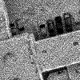 | 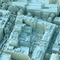 | 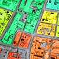 | 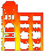 |
My master thesis focused on modeling snow buildup using implicit surfaces (more specifically level sets) by allowing snow to fall in a wind field. Level sets are propagated according to snow particle collisions, with constraints to mimic realistic buildup.
We present a physically-based snow modeling approach that handles geometrically complex scenes and arbitrary amounts of accumulated snow. Scene objects are represented with a novel dual level set structure. This implicit surface representation produces smooth snow surfaces that adhere to granular stability constraints at every timestep. Realistic accumulation patterns are achieved by tracing snow-carrying particles in a dynamic wind-field and on the surfaces of objects. Local level set operations are used to deposit snow at surface locations for which accumulation is physically plausible. The effectiveness of our method is demonstrated by applying our method to a number of challenging scenes.
“Wind-Driven Snow Buildup Using a Level Set Approach”,
T. Hinks, K. Museth,
Eurographics Ireland Workshop Series, Vol. 9, December 2009, Dublin, Ireland, pp. 19-26.
paper [.pdf] | presentation [.pdf] - Best presentation award!
| 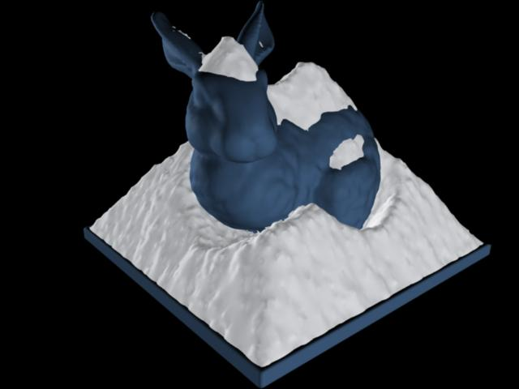 | 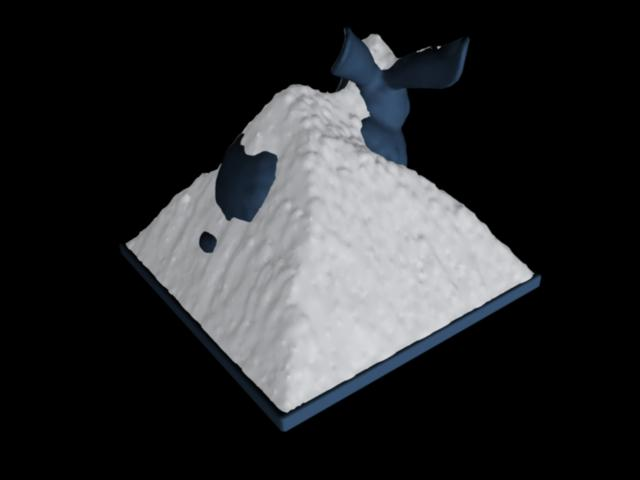 | 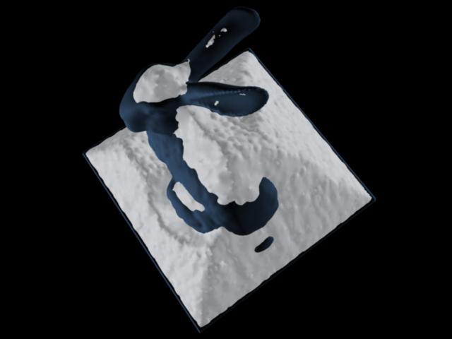 |
| 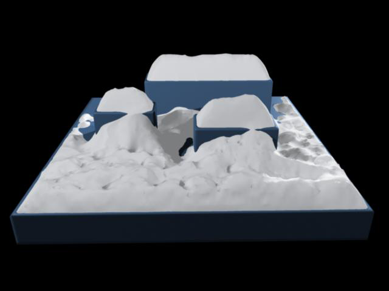 | 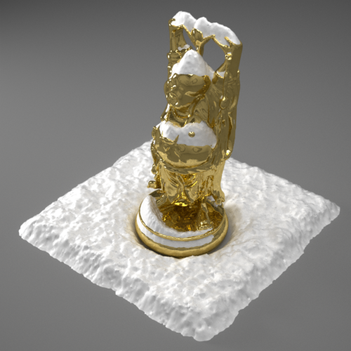 | 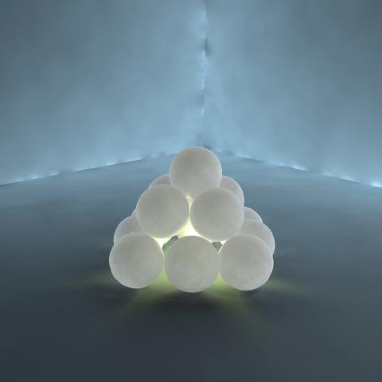 |
”Visualisation of urban airborne laser scanning data with occlusion images”,
T. Hinks, H. Carr, H. Gharibi, D. Laefer,
ISPRS Journal of Photogrammetry and Remote Sensing, Vol. 104, June 2015, pp. 77-87. DOI
”Point Cloud Data Conversion into Solid Models via Point-Based Voxelization”,
T. Hinks, H. Carr, L. Truong-Hong, D. Laefer,
J. Surv. Eng., Vol. 139, No. 2, May 2013, pp. 72-83. DOI
“Combining an Angle Criterion with Voxelization and the Flying Voxel Method in Reconstructing Building Models from LiDAR Data”,
L. Truong-Hong, D.F. Laefer, T. Hinks, H. Carr,
Computer-Aided Civil and Infrastructure Engineering, Vol. 28, No. 2, February 2013, pp. 112-129. DOI
“Flying Voxel Method with Delaunay Triangulation Criterion For Façade/Feature Detection For Computation”,
L. Truong-Hong, D. Laefer, T. Hinks, H. Carr,
J. of Computing in Civil Eng., ASCE. DOI
“New Advances in Automated Urban Modelling from Airborne Laser Scanning Data”,
D.F. Laefer, T. Hinks, H. Carr, L. Truong-Hong,
Recent Patents on Engineering, Bentham Science Publishers, Vol. 5, No. 3, December 2011, pp. 196-208. DOI
“New possibilities for damage prediction from tunnel subsidence using aerial LiDAR data”,
D.F. Laefer, T. Hinks, H. Carr,
Geotechnical Challenges in Megacities, Vol. 2, June 7-10, 2010, ISSMGE Moscow, pp. 622-629.
“Wind-Driven Snow Buildup Using a Level Set Approach”,
T. Hinks, K. Museth,
Eurographics Ireland Workshop Series, Vol. 9, December 2009, Dublin, Ireland, pp. 19-26.
“Flight Optimization Algorithms for Aerial LiDAR Capture for Urban Infrastructure Model Generation”,
T. Hinks, H. Carr, D.F. Laefer,
Journal of Computing in Civil Engineering, Vol. 23, No. 4, November/December 2009, pp. 330-339.
“Post Facto Registration Tools for Urban Modelling”,
Y. Morvan, T. Hinks, H. Carr, D.F. Laefer, C. O’Sullivan, W.S. Morrish,
EuroGraphics 2008, April 2008, Crete, Greece, pp. 215-218.
“Impediments to vertical data capture from Aerial LiDAR for Three-dimensional Building Extraction”,
T. Hinks, H. Carr, D.F. Laefer,
IABSE Symposium Report, IABSE Symposium, International Association for Bridge and Structural Engineering, September 2007, Weimar, Germany, pp. 268-274.
Robust Building Outline Extraction. PTO 56793223, Provisional filing May 2008, Full filing May 2009.
Gold medal at Young European Arena of Research (YEAR), held in Ljubljana, Slovenia in April 2008.
“Impediments to Vertical Data Capture from Aerial LiDAR for Three-dimensional Building Extraction”,
TRB 87th Annual Meeting, January 2008, Washington, DC, USA.
Wireframe rendering is normally done in two passes; the first renders the filled triangles and the second renders the lines, using the depth buffer from the first pass to remove hidden lines. Not only does this involve passing the geometry twice to the graphics card, there are issues with depth testing for the lines due to slight differences in rasterization techniques between lines and triangles. These differences result in rendering artefacts and there is no good way to resolve this. In 2006 a new technique was proposed in a SIGGRAPH sketch entitled Single-pass Wireframe Rendering. The technique uses a pair of shaders to render triangles and lines in a single pass. Not only does this overcome rasterization issues, it is also faster and produces smooth results. The main idea is to compute the distances from fragments to triangle edges. If a fragment is within a threshold distance (half the line width) from a triangle edge, the fragment is rendered with the line color, otherwise it is rendered with the triangle color. A smoothing function is applied at the boundary between triangle and line to remedy aliasing artefacts. Most of the work is done in a vertex shader, where the distances to all triangle vertices are computed in viewport space. It is these (interpolated) distances that are the input to the fragment shader. A more robust implementation, using geometry shaders, has been proposed by NVIDIA. Their implementation deals with some tricky cases related to primitives having one or more vertices outside the viewing frustum and further reduces the amount of data sent to the graphics card.
|
|
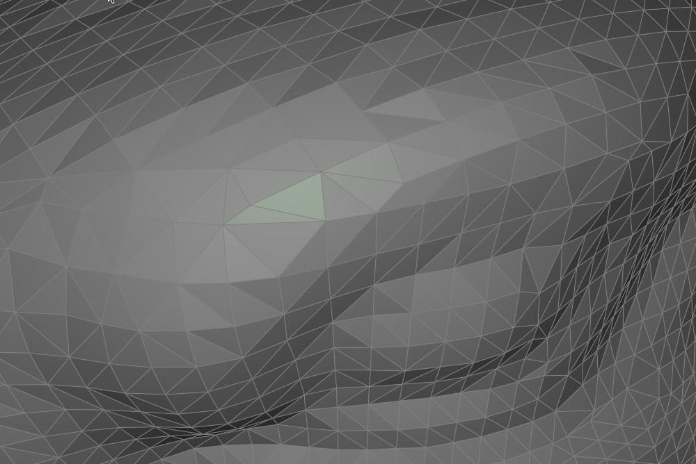 | 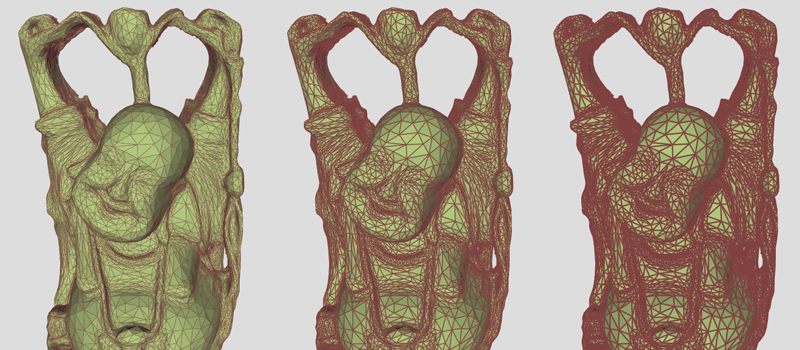 |
| 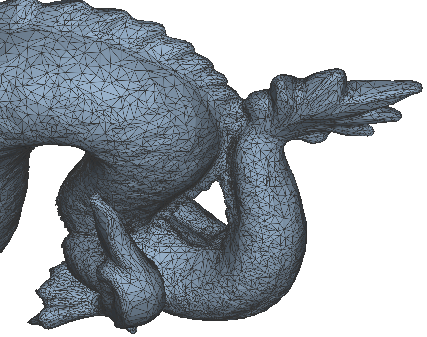 | 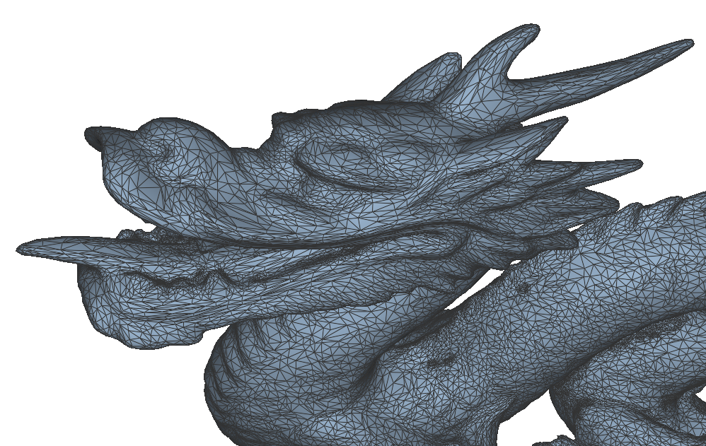 | 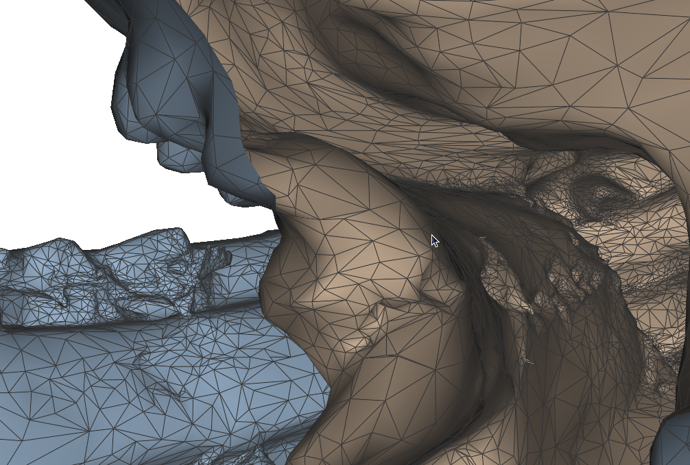 |
Volumetric effects, such as smoke, are difficult to capture with standard rasterization techniques because light interacts with volumes rather than surfaces. This real-time renderer was written for Naiad Studio and uses a volume rendering approach based on camera-aligned proxy geometry and shaders. This method is well explained in GPU Gems. Lighting equations are integrated by rendering proxy geometry in multiple passes, storing accumulated light in a view buffer, while simultaneously accumulating visibility from a light source.
| 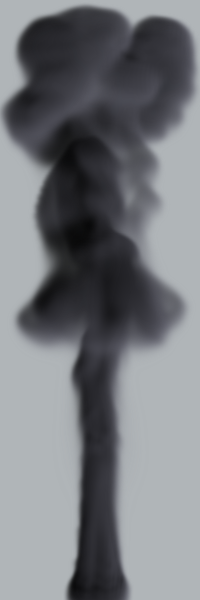 | 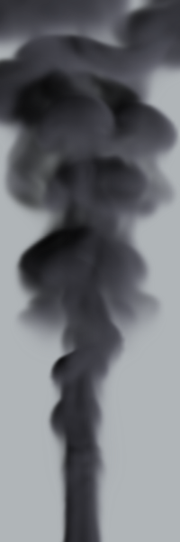 |